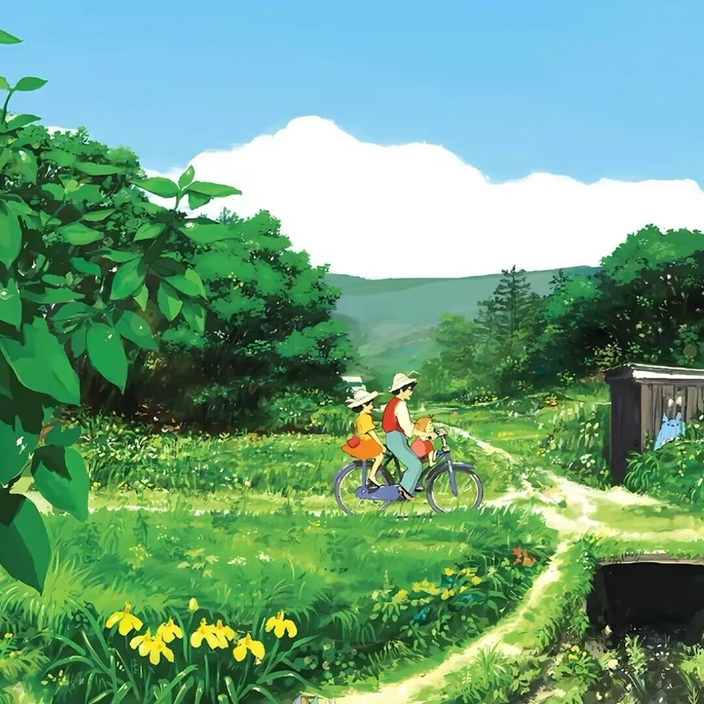

百毒不侵
惜君如常
平安喜乐
洒脱余生
中二少年

一阵狂奔，让自己在自然中挥发热与汗，一阵疾驰，让心中的愤懑放任的发泄，你可以呐喊，也可以狂吼，让心情得到舒展，让情绪得到宣泄，人的情感需要梳理，减减压，宣泄一下，也许你就会找到人生新的坐标。
既然真实的世界是失重的，为何还要那么多的飞翔动作呢？自恋、无病呻吟、都市伪文艺、颓废等等，在劳动人民看来，都是吃饱了没事干撑的。生命之中，你我所走过的每一个地方，每一个人，也许都将成为驿站、成为过客，一向喜欢追忆，喜欢去回顾，喜欢不忘记。
个人简介